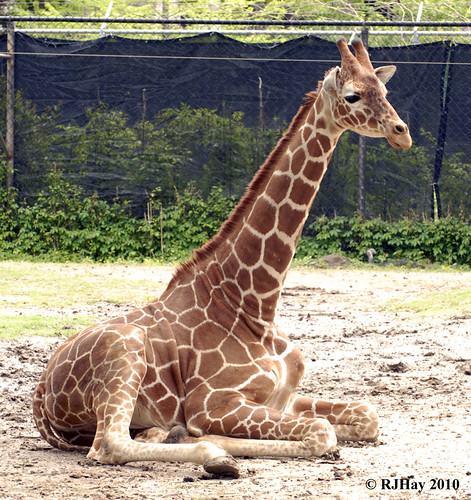
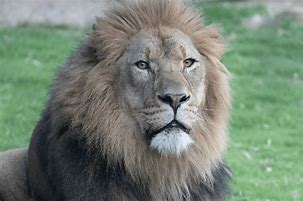
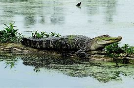

Nick's Animals at his personal zoo
Animals at the Zoo
Bears
- Khabib
- Tagir
 Louisiana black bears (Ursus americanus luteolus) are a subspecies of the
American black bear. They are active at night and go through a dormancy
period rather than a true hibernation in the winter. They are smaller and
have a more narrow skull than other black bears.
Louisiana black bears (Ursus americanus luteolus) are a subspecies of the
American black bear. They are active at night and go through a dormancy
period rather than a true hibernation in the winter. They are smaller and
have a more narrow skull than other black bears.
Giraffes
- Gilly
- Stephen

Giraffes are considered gentle giants, which is no surprise considering
they have the largest heart of any land mammal! At birth, giraffes weigh
150 pounds and can be up to 6 feet tall. On average, giraffes are 15-18
feet tall, and their tongues are 18-20 inches long.
Lions
- Leon
- Matthias

While lions are a social big cat and are often found in 'prides', there is
no strict social structure. Some animals, both male and female, can be
solitary and other times males may form coalitions. The most notable
feature is seen on the males- the mane. African lions are carnivores and
considered to be generalist hunters that will eat any species they can
catch.
Monkeys
- Lonnie
- Jourdan
 Geoffroy’s spider monkeys (Ateles geoffroyi), also called black-handed
spider monkeys, live in groups in the upper levels of the rainforest. Ripe
fruit makes up the largest part of their diet, although they will eat
plants and even small insects.
Geoffroy’s spider monkeys (Ateles geoffroyi), also called black-handed
spider monkeys, live in groups in the upper levels of the rainforest. Ripe
fruit makes up the largest part of their diet, although they will eat
plants and even small insects.
Alligators
- Boudreaux
- Thibodaux

Any living creature near the water is fair game for alligators, including
fish, deer, birds, raccoons – and sometimes dogs, cats, and humans.
American alligator (Alligator mississippiensis) are known to live in
proximity to people.